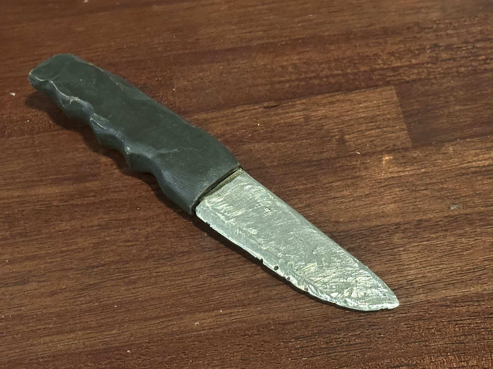
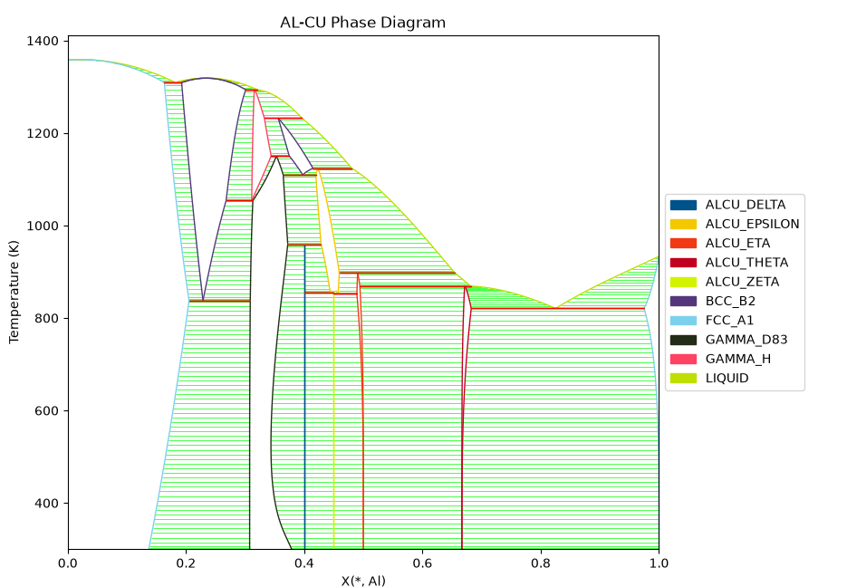

About
As someone with interests in materials science and engineering, the ability to make things out of higher performance materials is very appealing. With access to alloys like ZA-27 and Aluminum Bronze, I can make very strong parts.

Alloy Experimentation
I have used the CALPHAD method to model the phase and properties of various alloys. For example a copper-aluminum alloy can yield a stronmg but ductile aluminum bronze, but with too much aluminum this same system makes intermetallics that are brittle enough to break by hand but hard enough to scratch glass.